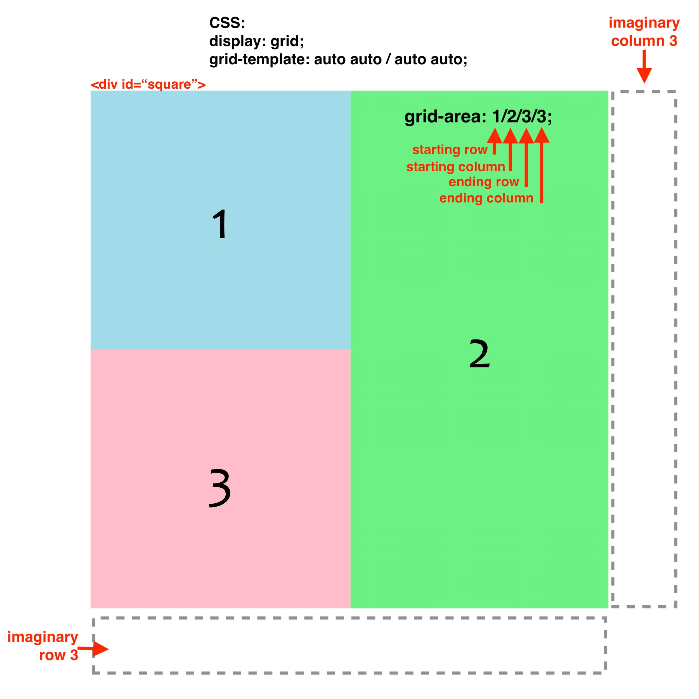

This guide shows briefly how to set up a grid for page layout. The grid is defined by setting a <div> to display: grid; and the number of rows and columns with the grid-template style. For details, see the online game, “Grid Garden” (carrot link above).
Below is a 2×2 grid that is 512px square. The following are synonymous ways to specify the rows and columns (1fr = 1 fraction of the available space):
grid-template: auto auto / auto auto;
grid-template: repeat(2,auto) / repeat(2,auto);
grid-template: 256px 256px / 256px 256px;
grid-template: repeat(2,256px) / repeat(2,256px);
grid-template: 1fr 1fr / 1fr 1fr;
grid-template: repeat(2,1fr) / repeat(2,1fr);
The colored squares are nested <div> tags that are placed into the grid in sequence. To make <div> #2 span two rows, the starting and ending rows and columns were specified in the grid-area style (i.e., starting row / starting column / ending row / ending column, of which the ends are at the beginning of imaginary row 3 and column 3).
The cells for <div>s 1 and 3 are not specified because they are placed in order by default, however the specification for <div> 1 would be grid-area: 1/1; and for <div> 3 would be grid-area: 2/1;. Only the starting row and column need to be specified if the <div> only occupies one cell.
